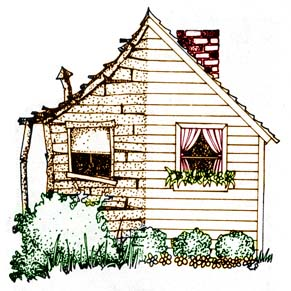

Everyone loves a success story, and the article "Gamble for Your Homestead Front Money!" by Mrs. W.G. McCusker (MOTHER NO. 27) made good reading. I'm sure we're all delighted that the couple were fortunate enough to obtain a $16,000 home in bad shape, fix it up and sell it two months later for $21,950. Readers who follow the McCuskers' advice exactly, however, may not be so lucky.
First, Mr. and Mrs. McCusker were willing to accept friendly advice from a real estate agent, from a tool rental firm and from almost everyone else . . . but they didn't trust the banker. Yet banks, too, are there to make money, and generally find they can make more if they give good service and win friends.
I suspect that the couple might have saved expenses if they had explained their idea to a banker and found out whether they actually needed to set up a mortgage at all. Some sort of short-term note might well have lowered the closing cost and spared them the other fees normally involved in arranging a long-term agreement.
Also, substantial penalties are sometimes required when a mortgage is closed out extremely early or excess payments are made on it quickly. These charges are designed to cover the costs which the bank incurred in setting up the unnecessary mortgage.
Another point: My own feeling is that the McCuskers wasted a lot of travel time by living elsewhere. It would have been simpler to stay in their new house-in sleeping bags in the spare room or something-to avoid the additional cost of renting an apartment. Not only that but fire insurance and some form of homeowners' liability insurance (necessary to satisfy the banker) are often considerably more costly for an unoccupied dwelling.
Remember, too, that an empty house-no matter how secure it is-quickly becomes a target for vandals. Youngsters in a neighborhood know when a building is unused . . . and one or two small children, armed with a brick and a box of crayons, could have done substantial damage to the McCuskers' face lift.
Speaking of face lift, I see no indication in the article that Bill and his wife obtained a building permit for any of their remodeling . . . especially the putting up of partitions in the basement. Local building codes may ban or limit this in some way because cellar rooms have little access to the exterior and an occupant may be trapped in case of fire. Therefore, it's always smart to contact the city, village, township or county building department at the outset, get a permit and find out what you can and can't do. My own personal experience is that building inspectors are pretty good guys and will spend hours filling you in on things you need to know to do the job properly and safely.
Finally-though Mrs. McCusker didn't mention any electrical work-might as well cover that too. The electrical inspector will usually let the homeowner do whatever kind of wiring he wants to in his own residence, because he himself lives in it and takes the risk of any hazardous connections. If you're fixing up a place where you don't live, however, the official is apt to insist that you have a licensed electrician do the work.
I hope these suggestions will be considered by anyone who wants to repair an older home, as the McCuskers did.
Craig Wilson is director of the Akron Beacon Journal "Action Line".
DAVID L. BENNETT:
I want to comment on Mrs. W.G. McCusker's article on renovating a house for resale (MOTHER NO. 27) because of a disappointing experience I had looking for a home in Baltimore (I'm still looking).
I found an older house in a good, convenient location, with plenty of room, a good floor plan and a large yard. Unfortunately, the owner had bought it a year before with the sole intention of making some superficial cosmetic "improvements" and reselling it for a profit. He never lived in the place himself, and his work showed it: He consistently used materials and workmanship which I'm sure he would not have used in his own home. . . but would cheerfully inflict on someone else for a quick profit.
The prospective seller had even-as Mrs. McCusker advises-covered a solid oak plank floor with cheap carpeting. ("City set" notwithstanding, I have never met anyone who preferred carpet to good oak.) The interior was finished in contractor-grade, bargain-basement materials from top to bottom, and painted in nice "neutral colors" to give it all the personality of a loaf of commercial white bread. The final insult was an outrageous price. What would have been an almost perfect house for my wife and I to make over for ourselves had been effectively ruined by the owner's remodeling for profit rather than for living.
I believe the McCuskers were more conscientious and industrious than the owner I met, but they were working on the same principle: the most obvious cosmetic face lift with the least expenditure of money and effort, and the intentional depersonalization of a home to appeal to a market rather than an individual family.
The idea can still be a good one, but consider making changes in substance rather than facade. A careful buyer will appreciate a sound roof or heating system more than a barrage of cheap paneling or neutral-color paint everywhere.
|
 |
|
|